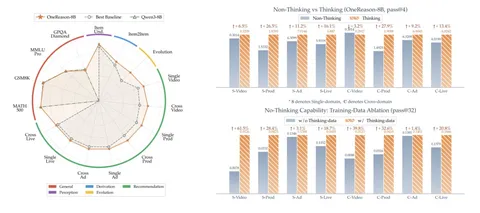

Сегодня разбираем хайповый техрепорт от Kuaishou на 108 страниц, в котором авторы научились получать существенный профит от ризонинг-моделей в рекомендациях.
В предыдущих статьях — OneRec-Think и OpenOneRec — модели уже могли генерировать человекочитаемые рассуждения на естественном языке, но thinking-режим не давал стабильного прироста и иногда даже ухудшал рекомендации. В OneReason авторы предлагают полный рецепт, объединяющий улучшенное восприятие itemic-токенов, структурированный CoT и доменный RL. В результате reasoning trace наконец начинает помогать предсказанию, а общие способности модели в основном сохраняются.
В этом разборе сосредоточимся преимущественно на первой части рецепта: устройстве бенчмарков, токенизации и многоуровневом претрейне, который создаёт семантический фундамент для последующего ризонинга.
Авторы предлагают не предсказывать следующий айтем напрямую по шумной истории пользователя. Сначала модель строит структурированный reasoning trace в три этапа. На этапе Persona Abstraction она сжимает историю в компактный профиль устойчивых предпочтений. Затем Interest Expansion выделяет несколько возможных направлений интереса, подтверждённых поведением пользователя. Наконец, Transition Inference сравнивает эти гипотезы с учётом силы и свежести сигналов, их временной связности и соответствия целевому домену. После этого модель генерирует itemic-токены следующего айтема.
Способности модели авторы оценивают на четырёх последовательных уровнях:
R0 — связывать itemic-токены с их текстовой семантикой и отвечать на вопросы о свойствах айтемов;
R1 — выводить отношения и возможные переходы между айтемами на основе их семантики;
R2 — рассматривать историю пользователя как временную последовательность и восстанавливать эволюцию его интересов;
R3 — объединять предыдущие способности для next-item prediction.
Для каждого уровня в едином OneReason-Bench предусмотрен свой набор диагностических задач. Финальное качество рекомендаций измеряют в двух сетапах:
Чтобы модель вообще смогла строить такие рассуждения, сначала её пришлось научить понимать сами itemic-токены и пользовательские истории. Об этом поговорим во второй части.
@RecSysChannel
Разбор подготовил
